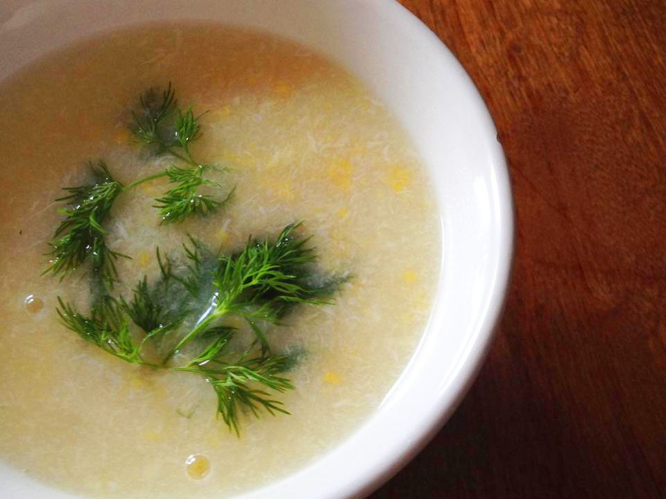

Corn Soup

Description
This quick and easy Chinese corn soup is so good that I never bother ordering it from restaurants anymore!
Ingredients
- 1 (15 ounce) can cream style corn
- 1 (14.5 ounce) can low-sodium chicken broth
- 1 tablespoon cornstarch
- 2 tablespoons water
- 1 large egg, beaten
Steps
- Combine corn and chicken broth in a saucepan. Bring to a boil over medium-high heat.
- Mix together cornstarch and water in a small bowl or cup; pour into the boiling corn soup,
and continue cooking for about 2 minutes, or until thickened.
- Gradually add beaten egg while stirring the soup. Remove from heat and serve.